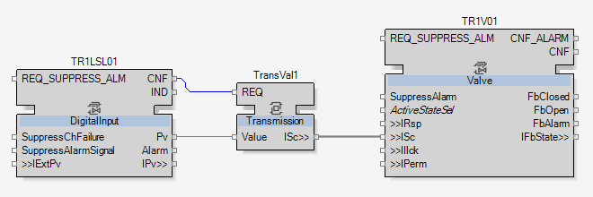
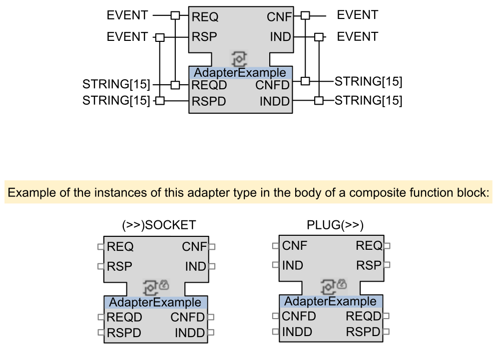

Introduction to Adapters
In some previous topics like Opening the First Valve or SeqHead Function Block, adapters have been used without detailed explanation. As the adapters will be used more frequently, it is now important to detail them.
To understand this introduction, go to the Interface editor of the FillingTank CAT.
All the inputs and outputs of the CAT are designed here. There are some categories that have already been defined in the topic Function Block Model of IEC61499:
-
The Event Inputs
-
The Even Outputs
-
The Input Variables
-
The Output Variables
There are as well four other categories that haven’t been used yet:
-
The Sockets
-
The Plugs
-
The Adapter Inputs
-
The Adapter Outputs

|
NOTE:
These four categories are all related to adapters. |

|
An adapter is a bidirectional way of transmitting of information between two function blocks. |
The two function blocks linked by the adapter are simultaneously sending and receiving variables and events to and from each other. The adapter is gathering all this transferred information into one orange link, as seen in the topic Opening the First Valve:

This specific bidirectional way of transmitting information will be detailed with the following AdapterExample adapter.
|
 |
As visible from the example, the two Plug and Socket function blocks are complementary and symetrical.
The Socket has as inputs REQD and RSPD, and as outputs CNFD and INDD, while the Plug has them too but the other way around.
The Socket has the two arrows pointing to itself, on the left of the name, while the Plug has the two arrows leaving it, on the right of the name. These arrows are the way to differentiate from each other since they both have the same name.
|
|
NOTE:
The adapters are bidirectional because they are sending and receiving information at the same time, through only one function block. |
The left side (input) of the adapter is sending information to the connected adapter whereas the right one (output) receives information from the connected adapter.
So, for example, the information transmitted in the input CNFD of Plug is received to CNFD output of the Socket. And simultaneously, the information transmitted in the input REQD of Socket is received to the output REQD of the Plug.
|
|
The advantages of using adapter are:
|
|
|
NOTE:
To know more about the adapters, read the topic Adapter Function Block in the User Manual. To find it, open the User Manual and enter the topic name in the search tab. |